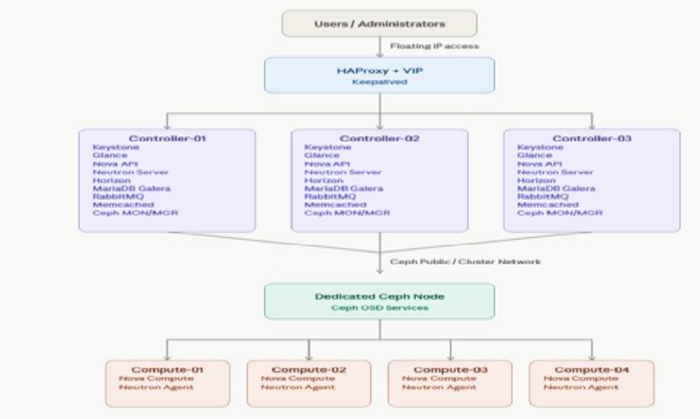
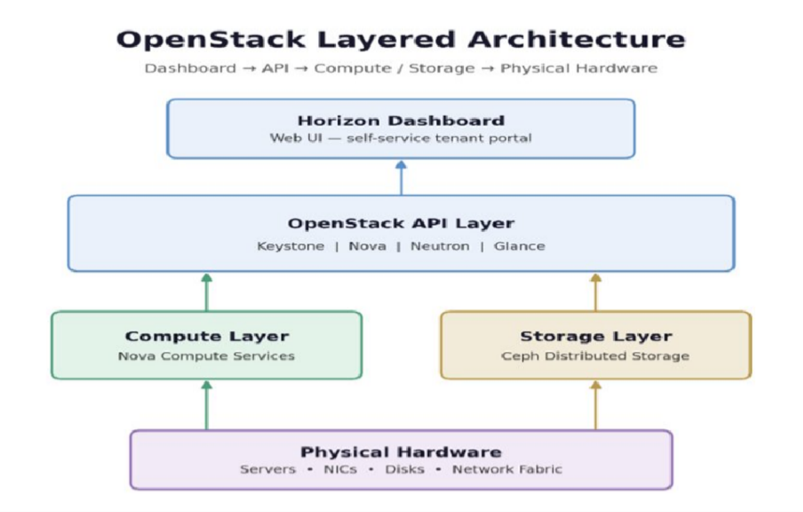
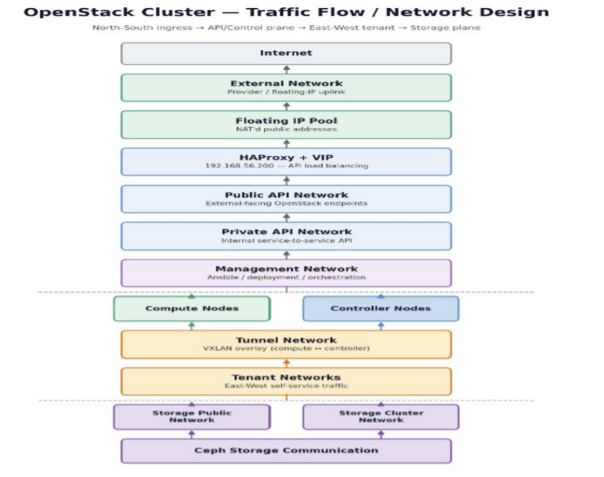
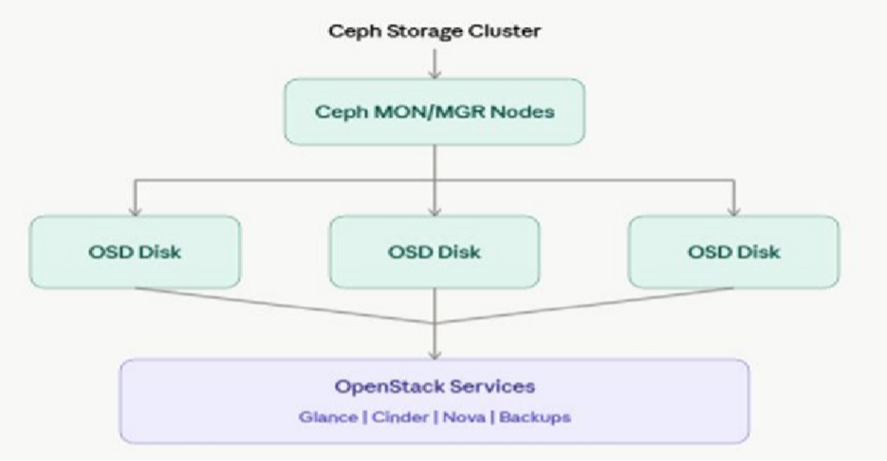
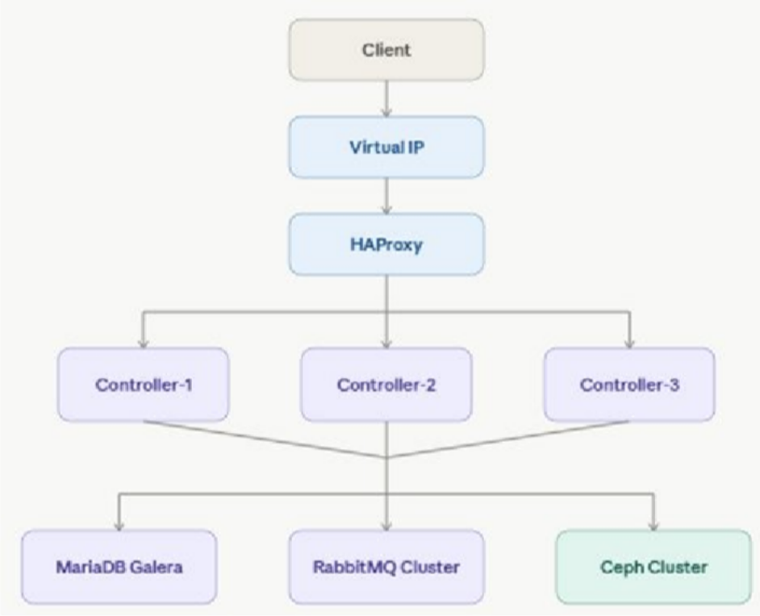

Phase 4: Infrastructure Design
Purpose
The Infrastructure Design phase defines the complete architecture of the OpenStack production environment. It specifies how physical servers, network infrastructure, storage components, and OpenStack services will be organized to deliver a scalable, secure, and highly available private cloud platform. The design serves as the blueprint for implementation and ensures consistency throughout deployment, testing, and production operations.
Design Objectives
The infrastructure has been designed with the following objectives:
Build a highly available OpenStack environment.
Eliminate single points of failure.
Provide scalable compute and storage resources.
Separate traffic using dedicated networks.
Support enterprise storage integration.
Simplify deployment through Kolla-Ansible.
Enable future cluster expansion with minimal changes.
Maintain secure communication between services.
High-Level Infrastructure Architecture

Physical Infrastructure Design
Physical Node Layout
Server Name |
Role |
Main Services |
|---|---|---|
Controller-01 |
Controller + Ceph |
API Services, Database, RabbitMQ, Ceph MON |
Controller-02 |
Controller + Ceph |
API Services, Database, RabbitMQ, Ceph MON |
Controller-03 |
Controller + Ceph |
API Services, Database, RabbitMQ, Ceph MON |
Ceph-01 |
Storage |
Ceph OSD |
Compute-01 |
Compute |
Nova Compute |
Compute-02 |
Compute |
Nova Compute |
Compute-03 |
Compute |
Nova Compute |
Compute-04 |
Compute |
Nova Compute |
Logical Architecture

Service Placement Matrix
Service |
Controller |
Compute |
Ceph Node |
|---|---|---|---|
Keystone |
✓ |
||
Glance |
✓ |
||
Nova API |
✓ |
||
Nova Compute |
✓ |
||
Neutron Server |
✓ |
||
Neutron Agent |
✓ |
||
Horizon |
✓ |
||
Placement |
✓ |
||
Cinder API |
✓ |
||
Cinder Volume |
✓ |
||
RabbitMQ |
✓ |
||
MariaDB Galera |
✓ |
||
Memcached |
✓ |
||
HAProxy |
✓ |
||
Keepalived |
✓ |
||
Ceph MON |
✓ |
||
Ceph OSD |
✓ |
Network Design
Network Architecture

Network Design Table
Network |
CIDR (Example) |
Purpose |
|---|---|---|
Management |
192.168.10.0/24 |
Node Management |
Public API |
192.168.20.0/24 |
API Access |
Private API |
192.168.30.0/24 |
Internal Services |
Tunnel |
192.168.40.0/24 |
VXLAN Traffic |
Storage Public |
192.168.50.0/24 |
Ceph Client Access |
Storage Cluster |
192.168.60.0/24 |
Ceph Replication |
External |
Organization Network |
Floating IP |
iSCSI |
192.168.70.0/24 |
SAN Storage |
NAS |
192.168.80.0/24 |
NAS Storage |
Storage Architecture

High Availability Design
Component |
HA Method |
|---|---|
API Access |
HAProxy + Keepalived |
Database |
MariaDB Galera Cluster |
Messaging |
RabbitMQ Cluster |
Storage |
Ceph Replication |
Controllers |
Multi-Controller Deployment |
High Availability Flow

Security Design
Security Component |
Design Decision |
|---|---|
Authentication |
Keystone Identity Service |
Authorization |
RBAC |
API Encryption |
TLS/SSL |
SSH Access |
Key-based Authentication |
Firewall |
Network-Level Filtering |
Tenant Isolation |
Neutron Security Groups |
Image Protection |
Glance Image Validation |
Scalability Design
The infrastructure has been designed to support future expansion without major architectural changes.
Component |
Expansion Capability |
|---|---|
Controller Nodes |
Add additional controllers if required |
Compute Nodes |
Add new compute nodes to increase VM capacity |
Ceph Storage |
Add OSD disks or new storage nodes |
Networks |
Add new VLANs for future workloads |
OpenStack Services |
Enable additional services such as Heat, Magnum, Octavia, or Designate |